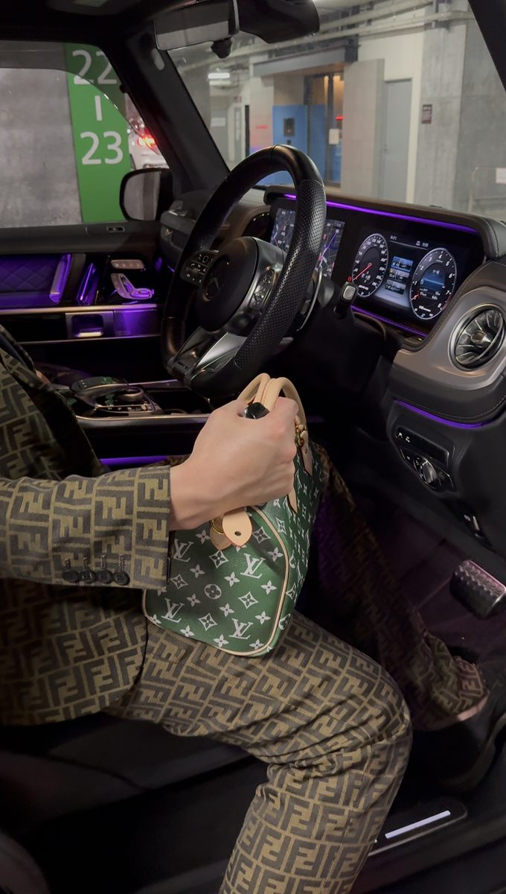

気負わず、話そう。
借金地獄から
抜け出したから
言えることがある
見栄を張って、数字から逃げていた。
そんな過去も、隠さず話す。
まずは、バルがどんな人か知ってほしい。
聞きたいことを、そのまま送って。

借金750万の過去も、今の自分も。PERSONAL JOURNAL / 01
01 / ABOUT
3年でG63買えちゃった
高いものを買うのが
ゴールじゃない
手取り18万。借金750万。
惨めな人生から抜け出したかった。
最初に変えたのは、
見栄と数字から逃げる癖だった。
いいところだけじゃなく、
遠回りした話も、ここに残していく。
02 / TALK TO BARU
何から聞けばいいか、
分からなくても。
最初から詳しくなくていい。
こんなことから、聞いてみて。
まとまってなくても大丈夫。
聞きたいことを、そのまま送って。
03 / CONVERSATIONS
一人一人
ちゃんと返事してるよ
みんなの声。実際に届いたやり取りから。
※掲載内容は個別のやり取りです。同じ結果や利益を保証するものではありません。
04 / INFORMATION
転機はこの2つ
見てきた情報源を、ここに。
利用する前に、内容と料金を確認してほしい。
※予想は的中や利益を保証しません。競艇は借金返済や生活の立て直しを保証する手段ではありません。生活費・借入金での利用はしないでください。
05 / GUIDE
どうやるの？
必要な手順だけ、図解で確認。
06 / DAYS
色々買えるようになったよ
続けたら形になって来た。
今の自分も、記録として残しておく。
※個人の記録です。掲載した資産や生活が、予想サイトの利用で得られることを示すものではありません。
LET’S TALK
一旦聞きに来たら？
聞きたいことがひとつあれば、
それで十分。
20歳未満の舟券購入は禁止されています。必勝・利益保証はありません。無理な利用や生活費での利用はしないでください。